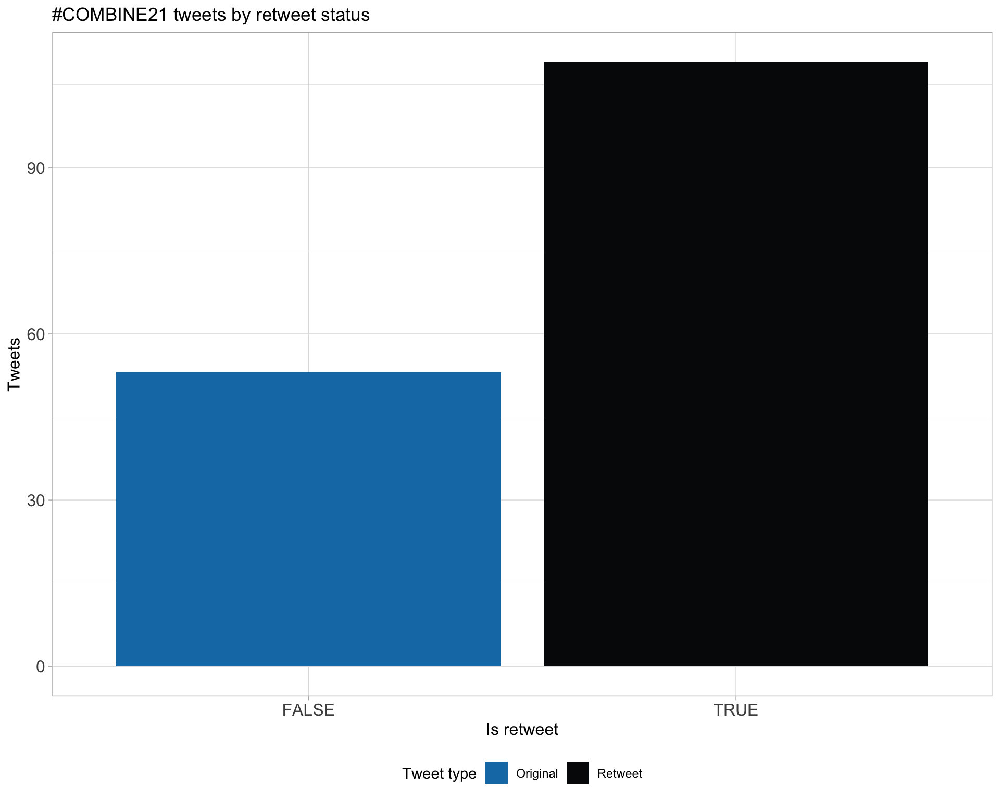

COMBINE21
COMBINE Symposium 2021
Last built: 2021-11-22 11:08:45
| Parameter | Value |
|---|---|
| hashtag | #COMBINE21 |
| start_day | 2021-11-22 |
| end_day | 2021-11-22 |
| timezone | Australia/Sydney |
| theme | theme_light |
| accent | #127bb3 |
| accent2 | #050708 |
| kcore | 2 |
| topics_k | 6 |
| bigram_filter | 3 |
| fixed | TRUE |
| seed | 1 |
Introduction
An analysis of tweets for the query #COMBINE21 related to COMBINE Symposium 2021 from 2021-11-22 to 2021-11-22. A total of 162 tweets from 55 users were collected using the {rtweet} R package.
1 Timeline
1.1 Tweets by day
1.2 Tweets by day and time
Filtered for dates 2021-11-22 - 2021-11-22 in the Australia/Sydney timezone.
2 Users
2.1 Top tweeters
Overall
Original
Retweets
2.2 Retweet proportion
2.3 Top tweeters timeline
2.4 Top tweeters by day
Overall
Day 1

Original
Day 1
Retweets
Day 1
3 Sources
Users
Tweets
4 Networks
4.1 Replies
The “replies network”, composed from users who reply directly to one another, coloured by PageRank.
4.2 Mentions
The “mentions network”, where users mention other users in their tweets. Filtered for a k-core of 2. Node colour and size adjusted according to PageRank score.
5 Tweet types
5.1 Retweets
Proportion

Count
Top 10
| screen_name | text | retweet_count |
|---|---|---|
| combine_au |
Only a few days left to register for the #COMBINE21 Symposium! We are looking forward to a great selection of talks on all things bioinformatics! Register now at https://t.co/PlrttPuJvc #bioinformatics #phdlife |
8 |
| NhiHin | Amazing talk by Hugh Cottingham from @DrKatHolt lab who presented an effective demonstration of using a CRISPR-Cas9 approach with Oxford Nanopore sequencing to target and enrich sequences of interest in complex bacterial mixtures. #COMBINE21 #Bioinformatics https://t.co/0UhDrt5icf | 8 |
| combine_au |
Congratulations to all of our prize winners for best talk, best flash talk and people‚Äôs choice awards! Hats off to a truly great #COMBINE21 Symposium and to all of the amazing #Bioinformatics research being done in Australia üôå https://t.co/P7iRzllgRT |
7 |
| combine_au |
SO excited for this years #COMBINE21 Symposium ü§© now less than 24 hours away! Not registered yet? No problem, register now at https://t.co/PlrttPuJvc #Bioinformatics #phdlife |
7 |
| NhiHin |
Pan-genomes explained using Pac-Man ghosts! üëª The most creative and effective explanation of pan-genomes I have seen. Great work Chelsea! @bioinfocharls #Bioinformatics #COMBINE21 https://t.co/fRNHjeEIDZ |
7 |
| combine_au |
"I wanted to do something that could make a difference to people, that took me on a career path towards #Bioinformatics."
|
6 |
| combine_au |
Our #COMBINE21 Symposium is about to begin! Check out our program to find out today‚Äôs session topics and selected talks! https://t.co/PlrttPuJvc See you all at 10:30AM AEDT ü§© |
6 |
| PatSullivann |
The #COMBINE21 annual bioinformatics conference is underway with the Genomics session! Check out the link below for access (through the booklet) and come support the Australian #bioinformatics student community with @combine_au https://t.co/K2WJQBF3Fy https://t.co/qzCToUfSEm |
6 |
| combine_au |
We are looking forward to an amazing selection of talks for our upcoming Translational #Bioinformatics session. Beginning at 3:15PM after our break. See you soon! #COMBINE21 https://t.co/dVe8wLwYXM |
5 |
| sachintha_wije |
We have an excellent line-up of talks on Genomics, Transcriptomics and Translational Bioinformatics! The keynote address will be given by Prof. @AliciaOshlack on "Transcriptomics: Past, present and future". #COMBINE21 #Bioinformatics #phdlife #PhD https://t.co/wPhTeWILkv |
5 |
Most retweeted
5.2 Likes
Proportion
Count
Top 10
| screen_name | text | favorite_count |
|---|---|---|
| NhiHin |
Pan-genomes explained using Pac-Man ghosts! üëª The most creative and effective explanation of pan-genomes I have seen. Great work Chelsea! @bioinfocharls #Bioinformatics #COMBINE21 https://t.co/fRNHjeEIDZ |
33 |
| wessidepraxis | We‚Äôre off for the week with #COMBINE21! I‚Äôll be tweeting from beautiful Hobart üòÄ | 24 |
| PatSullivann |
Outstanding Keynote Talk from @AliciaOshlack, the perfect primer for our upcoming #COMBINE21 transcriptomics session - Pun courtesy of @_AJSethi Featuring a shout out of her longstanding support of @combine_au and supervising many of our past presidents! https://t.co/eoWWme9QUc |
20 |
| NhiHin |
Powerful presentation by Anushi Shah at #COMBINE21 about a meta-analytic approach that combines 4 different methods to detect de novo mutations from genomic data. #Bioinformatics https://t.co/ghbRNkpLP8 |
18 |
| combine_au |
"I wanted to do something that could make a difference to people, that took me on a career path towards #Bioinformatics."
|
17 |
| sachintha_wije |
We have an excellent line-up of talks on Genomics, Transcriptomics and Translational Bioinformatics! The keynote address will be given by Prof. @AliciaOshlack on "Transcriptomics: Past, present and future". #COMBINE21 #Bioinformatics #phdlife #PhD https://t.co/wPhTeWILkv |
17 |
| NhiHin | Amazing talk by Hugh Cottingham from @DrKatHolt lab who presented an effective demonstration of using a CRISPR-Cas9 approach with Oxford Nanopore sequencing to target and enrich sequences of interest in complex bacterial mixtures. #COMBINE21 #Bioinformatics https://t.co/0UhDrt5icf | 17 |
| urwahnawaz | This is the first time I‚Äôve actually gained something thanks to Chai üò≠literally going to use the prize $$ to replace the extension cord he‚Äôs chewed #COMBINE21 https://t.co/qUa4XBRnHi | 16 |
| NhiHin |
Nora @Wenjun_nora from @drmcrl lab introduced the eternal dilemma faced by bioinformaticians analysing transcriptomic data - it is difficult to interpret differentially expressed genes and enriched pathways. #Bioinformatics #COMBINE21 https://t.co/RnZTvijAA4 |
16 |
| PatSullivann |
The #COMBINE21 annual bioinformatics conference is underway with the Genomics session! Check out the link below for access (through the booklet) and come support the Australian #bioinformatics student community with @combine_au https://t.co/K2WJQBF3Fy https://t.co/qzCToUfSEm |
15 |
Most likes
5.3 Quotes
Proportion
Count
Top 10
| screen_name | text | quote_count |
|---|---|---|
| sachintha_wije | We are live!! #COMBINE21 https://t.co/QaLpdggRNI | 3 |
| P_AgudeloRomero | #COMBINE21 Symposium for bioinformatics students https://t.co/0NMVarldAX | 3 |
| tyagilab | A great program and the committee behind it. Enjoy your day at #COMBINE21 https://t.co/J8FrXtK7vy | 3 |
| _AJSethi | What is the future of RNA in discovery science and translational research? Join prof. @AliciaOshlack‘s keynote lecture at @combine_au #COMBINE21, ’Transcriptomics: Past, present and future’ to learn more. Live now! https://t.co/aFojipaKWr | 2 |
| sachintha_wije | Excellent talks and questions during the #genomics session. Looking forward to Keynote address at 1:10 pm #COMBINE21 https://t.co/TZsxhItzsK | 2 |
| sachintha_wije |
We have an excellent line-up of talks on Genomics, Transcriptomics and Translational Bioinformatics! The keynote address will be given by Prof. @AliciaOshlack on "Transcriptomics: Past, present and future". #COMBINE21 #Bioinformatics #phdlife #PhD https://t.co/wPhTeWILkv |
1 |
| combine_au | We‚Äôre so proud of our organising committee for #COMBINE21! Loving all the talks so far üòç https://t.co/aDKTTTcfej | 1 |
| Wenjun_nora | Loved this flask talk on pan-genomes! So creative and still so easy to follow. Excellent work Chelsea! @bioinfocharls #COMBINE21 https://t.co/PnZXm1qKJ0 | 1 |
| giulia__iacono |
@himal2007 I can only imagine the headache you got when you saw that your data was not correlating at the beginning! Great job on your findings and super interesting research! #COMBINE21 https://t.co/1PvnAfn5VU |
1 |
| sachintha_wije | Be there to learn more about career pathways!!! #COMBINE21 https://t.co/8ARa3MR9aH | 1 |
Most quoted
6 Media
Proportion
Top 10
| screen_name | text | favorite_count |
|---|---|---|
| NhiHin |
Pan-genomes explained using Pac-Man ghosts! üëª The most creative and effective explanation of pan-genomes I have seen. Great work Chelsea! @bioinfocharls #Bioinformatics #COMBINE21 https://t.co/fRNHjeEIDZ |
33 |
| PatSullivann |
Outstanding Keynote Talk from @AliciaOshlack, the perfect primer for our upcoming #COMBINE21 transcriptomics session - Pun courtesy of @_AJSethi Featuring a shout out of her longstanding support of @combine_au and supervising many of our past presidents! https://t.co/eoWWme9QUc |
20 |
| NhiHin |
Powerful presentation by Anushi Shah at #COMBINE21 about a meta-analytic approach that combines 4 different methods to detect de novo mutations from genomic data. #Bioinformatics https://t.co/ghbRNkpLP8 |
18 |
| combine_au |
"I wanted to do something that could make a difference to people, that took me on a career path towards #Bioinformatics."
|
17 |
| NhiHin | Amazing talk by Hugh Cottingham from @DrKatHolt lab who presented an effective demonstration of using a CRISPR-Cas9 approach with Oxford Nanopore sequencing to target and enrich sequences of interest in complex bacterial mixtures. #COMBINE21 #Bioinformatics https://t.co/0UhDrt5icf | 17 |
| NhiHin |
Nora @Wenjun_nora from @drmcrl lab introduced the eternal dilemma faced by bioinformaticians analysing transcriptomic data - it is difficult to interpret differentially expressed genes and enriched pathways. #Bioinformatics #COMBINE21 https://t.co/RnZTvijAA4 |
16 |
| PatSullivann |
The #COMBINE21 annual bioinformatics conference is underway with the Genomics session! Check out the link below for access (through the booklet) and come support the Australian #bioinformatics student community with @combine_au https://t.co/K2WJQBF3Fy https://t.co/qzCToUfSEm |
15 |
| combine_au |
Congratulations to all of our prize winners for best talk, best flash talk and people‚Äôs choice awards! Hats off to a truly great #COMBINE21 Symposium and to all of the amazing #Bioinformatics research being done in Australia üôå https://t.co/P7iRzllgRT |
14 |
| urwahnawaz | You may hear my bunny trying to dig through a cardboard box (?) in the background during my flash talk #COMBINE21 https://t.co/zFiIuHizHB | 11 |
| _AJSethi | And that’s a wrap for #COMBINE21! Thanks to my incredible co-chair @sachintha_wije & our committee, our speakers, career panelists, Prof. @AliciaOshlack, and finally, all our attendees. Proudly supported by @PawseyCentre @IntersectAust @MelBioInf @SA_genomics. Onto #ABACBS2021!! https://t.co/G0LjAhaF0Y | 11 |
6.1 Most liked image

7 Tweet text
7.1 Word cloud
The top 100 words used 3 or more times.
7.3 Emojis

7.4 Bigram graph
Words that were tweeted next to each other at least 3 times.
7.5 Topic modelling
Top 10 words associated with 6 topics identified by LDA.
7.5.1 Representative tweets
Most representative tweets for each topic
Topic 1
| screen_name | text | gamma |
|---|---|---|
| combine_au |
A BIG thank you to @IntersectAust for sponsoring today’s #COMBINE21 Genomics session (starting now!) As a not-for-profit, Intersect offers research support to meet the specific needs of researchers and enhance research productivity. Check them out at https://t.co/4xgcXKVUnj |
0.9961023 |
| PatSullivann |
Outstanding Keynote Talk from @AliciaOshlack, the perfect primer for our upcoming #COMBINE21 transcriptomics session - Pun courtesy of @_AJSethi Featuring a shout out of her longstanding support of @combine_au and supervising many of our past presidents! https://t.co/eoWWme9QUc |
0.9961023 |
| PatSullivann |
The #COMBINE21 annual bioinformatics conference is underway with the Genomics session! Check out the link below for access (through the booklet) and come support the Australian #bioinformatics student community with @combine_au https://t.co/K2WJQBF3Fy https://t.co/qzCToUfSEm |
0.9958741 |
| IntersectAust | Intersect is gearing up for the @combine_au Symposium conference on Monday! As a session sponsor for the #COMBINE21 conference, Intersect will present at the Genomics session at 10:45am. There are still a few more days to register as a participant here: https://t.co/YmlhvbrJP9 | 0.9956176 |
| combine_au |
Congratulations to all of our prize winners for best talk, best flash talk and people‚Äôs choice awards! Hats off to a truly great #COMBINE21 Symposium and to all of the amazing #Bioinformatics research being done in Australia üôå https://t.co/P7iRzllgRT |
0.9956176 |
| combine_au |
What a great first #genomics üߨsession. We will be back at 1:10pm after the lunch break. Our #COMBINE21 Keynote Speech will be given by Prof. @AliciaOshlack and will be titled ‚ÄúTranscriptomics, past, present and future‚Äù. We are truly excited for this one! ü§© |
0.9946128 |
| PatSullivann |
We are now starting #COMBINE21’s 2nd session on Transcriptomics! https://t.co/K2WJQBF3Fy https://t.co/Et5DsR3NWf |
0.9884152 |
| sachintha_wije |
We have an excellent line-up of talks on Genomics, Transcriptomics and Translational Bioinformatics! The keynote address will be given by Prof. @AliciaOshlack on “Transcriptomics: Past, present and future”. #COMBINE21 #Bioinformatics #phdlife #PhD https://t.co/wPhTeWILkv |
0.6825103 |
Topic 2
| screen_name | text | gamma |
|---|---|---|
| PatSullivann | Our honours student Rachel did a fantastic job presenting her project disTIL: a turnkey approach to profile the immune landscape in cancer at #COMBINE21! Representing the @KidsCancerInst CompBio lab ü§ó @markjcowley https://t.co/evjuG3KaX4 | 0.9963065 |
| _AJSethi | What is the future of RNA in discovery science and translational research? Join prof. @AliciaOshlack‘s keynote lecture at @combine_au #COMBINE21, ’Transcriptomics: Past, present and future’ to learn more. Live now! https://t.co/aFojipaKWr | 0.9958741 |
| combine_au |
Only a few days left to register for the #COMBINE21 Symposium! We are looking forward to a great selection of talks on all things bioinformatics! Register now at https://t.co/PlrttPuJvc #bioinformatics #phdlife |
0.9941670 |
| giulia__iacono |
@himal2007 I can only imagine the headache you got when you saw that your data was not correlating at the beginning! Great job on your findings and super interesting research! #COMBINE21 https://t.co/1PvnAfn5VU |
0.9930102 |
| giulia__iacono |
What a great selection of talks and novel approaches presented today at the #COMBINE21 Symposium! Great day for #Bioinformatics research üߨ @combine_au @abacbs https://t.co/QmmQdUvSZz |
0.9922408 |
| combine_au |
SO excited for this years #COMBINE21 Symposium ü§© now less than 24 hours away! Not registered yet? No problem, register now at https://t.co/PlrttPuJvc #Bioinformatics #phdlife |
0.9912811 |
| tyagilab | What can amazing looking committee and program at @abacbs @combine_au symposium today üëè üëè #COMBINE21 #ABACBS2021 https://t.co/XGuD3evdwO | 0.9900504 |
| tyagilab | A great program and the committee behind it. Enjoy your day at #COMBINE21 https://t.co/J8FrXtK7vy | 0.9861367 |
| wessidepraxis | Now onto the keynote speaker for #COMBINE21: Prof Alicia Oshlack @AliciaOshlack ! | 0.9861367 |
| P_AgudeloRomero | #COMBINE21 Symposium for bioinformatics students https://t.co/0NMVarldAX | 0.9827427 |
Topic 3
| screen_name | text | gamma |
|---|---|---|
| combine_au |
A HUGE thank you shoutout to today‚Äôs #COMBINE21 Symposium PRINCIPAL Sponsor @PawseyCentre üôå Pawsey is accelerating scientific breakthroughs through world-class expertise and infrastructure in supercomputing and data-intensive analysis. Find out how at https://t.co/355XSCxLn5 |
0.9964904 |
| _AJSethi | And that’s a wrap for #COMBINE21! Thanks to my incredible co-chair @sachintha_wije & our committee, our speakers, career panelists, Prof. @AliciaOshlack, and finally, all our attendees. Proudly supported by @PawseyCentre @IntersectAust @MelBioInf @SA_genomics. Onto #ABACBS2021!! https://t.co/G0LjAhaF0Y | 0.9956176 |
| combine_au |
We are super grateful to all of our invited Symposium speakers! Thank you for coming along to today’s #COMBINE21 Symposium and for sharing your wisdom, expertise and insights into a career in #Bioinformatics! https://t.co/tzacB7uOlE |
0.9953271 |
| NhiHin |
Pan-genomes explained using Pac-Man ghosts! üëª The most creative and effective explanation of pan-genomes I have seen. Great work Chelsea! @bioinfocharls #Bioinformatics #COMBINE21 https://t.co/fRNHjeEIDZ |
0.9949953 |
| PatSullivann |
Fabulous talk from @KatherineeCaley about mutation disequilibrium at #COMBINE21. Such high-quality work is being presented by students of all levels today üí™ Takes me back to my first @combine_au talk in 2019 as an honours student. https://t.co/NqhNSFBbuD |
0.9946128 |
| Wenjun_nora | Loved this flask talk on pan-genomes! So creative and still so easy to follow. Excellent work Chelsea! @bioinfocharls #COMBINE21 https://t.co/PnZXm1qKJ0 | 0.9941670 |
| NhiHin |
The workflow is fully automated using Docker and runs on the cloud. This reproducibility is very much needed in bioinformatics, particularly for complex pipelines, so it is great to see. #COMBINE21 #Bioinformatics https://t.co/0WUhcTRVtA |
0.9936408 |
| urwahnawaz | You may hear my bunny trying to dig through a cardboard box (?) in the background during my flash talk #COMBINE21 https://t.co/zFiIuHizHB | 0.9922408 |
| combine_au |
“I wanted to do something that could make a difference to people, that took me on a career path towards #Bioinformatics.”
|
0.9922408 |
| combine_au |
It‚Äôs fabulous to see so many strong and engaging phylogenetics talks this year at #COMBINE21! Perhaps this has something to do with our combined conference with @phylomania ü§ó |
0.9912811 |
Topic 4
| screen_name | text | gamma |
|---|---|---|
| PatSullivann |
Starting in 10 minutes (5:15pm AEDT) is the bioinformatics careers panel at #COMBINE21. What a great way to close such a good day of cutting-edge bioinformatics talks presented by students in the @combine_au community. Ft. @sarah_beecroft, Etsuko Uno, @tpq__ and @tsonika https://t.co/lUvrDe0i1J |
0.9966568 |
| combine_au |
Our #COMBINE21 Careers Panel session is about to begin! üôå Check out our Panel members: Sarah Beecroft @sarah_beecroft Thom Quinn @tpq__ |
0.9961023 |
| NhiHin | The approach taken by @Wenjun_nora made several improvements to the original SPIA method which is used to calculate a perturbation score to assess how pathway activity differs across samples. #Bioinformatics #COMBINE21 https://t.co/VxLXMLMpx8 | 0.9953271 |
| combine_au |
Our #COMBINE21 Symposium is about to begin! Check out our program to find out today‚Äôs session topics and selected talks! https://t.co/PlrttPuJvc See you all at 10:30AM AEDT ü§© |
0.9941670 |
| urwahnawaz | This is the first time I‚Äôve actually gained something thanks to Chai üò≠literally going to use the prize $$ to replace the extension cord he‚Äôs chewed #COMBINE21 https://t.co/qUa4XBRnHi | 0.9941670 |
| combine_au | @mobeginomics We are very happy to have you in attendance today at #COMBINE21 üôå Hopefully the 7am start was worth it! | 0.9884152 |
Topic 5
| screen_name | text | gamma |
|---|---|---|
| NhiHin |
Nhan Trong Ly presented a new approach, AliSim, for simulating sequence alignments at #COMBINE21. The approach makes use of an evolutionary model. It outperforms existing tools, and a tutorial is available to follow along here: https://t.co/DH3u1jgQXQ #Bioinformatics https://t.co/iyJMlHUxT9 |
0.9964904 |
| NhiHin |
Nora @Wenjun_nora from @drmcrl lab introduced the eternal dilemma faced by bioinformaticians analysing transcriptomic data - it is difficult to interpret differentially expressed genes and enriched pathways. #Bioinformatics #COMBINE21 https://t.co/RnZTvijAA4 |
0.9963065 |
| PhilippBayer | The Perth #COMBINE21 and #ABACBS2021 hub is up and running! Streaming talks from 8am-ish most days this week. There’ll be lunch today and tomorrow, with morning tea courtesy of @dr_njarmstrong :) https://t.co/8lltT3sMnG | 0.9961023 |
| NhiHin |
Powerful presentation by Anushi Shah at #COMBINE21 about a meta-analytic approach that combines 4 different methods to detect de novo mutations from genomic data. #Bioinformatics https://t.co/ghbRNkpLP8 |
0.9958741 |
| phylofred | Fascinating work on constructing recombinant bacterial trees by @NehlehK. No brakes on the recombination train at #COMBINE21 üöÖ https://t.co/ZdVgA1FWLE | 0.9930102 |
| PhilippBayer | .@sarah_beecroft on the big screen!! #COMBINE21 #abacbs2021 https://t.co/y7kzFVLL61 | 0.9827427 |
Topic 6
| screen_name | text | gamma |
|---|---|---|
| NhiHin | Amazing talk by Hugh Cottingham from @DrKatHolt lab who presented an effective demonstration of using a CRISPR-Cas9 approach with Oxford Nanopore sequencing to target and enrich sequences of interest in complex bacterial mixtures. #COMBINE21 #Bioinformatics https://t.co/0UhDrt5icf | 0.9966568 |
| NhiHin | PhD student Nehleh Kargerfard presented her new method, PhiloBacteria at #COMBINE21. This tool addresses an important gap in the field - how recombination in bacteria skews the inference of a phylogenetic tree. #Bioinformatics https://t.co/5C9FEA4SI0 | 0.9961023 |
| combine_au |
Brace yourself! Our upcoming Transcriptomics session is starting now. We’d also like to thank our General sponsors @MelBioInf, @SA_genomics and @iscb for supporting this year’s Symposium! https://t.co/qjMNWjrogm https://t.co/efEDL0vTkN https://t.co/sGyC1ori9f #COMBINE21 |
0.9949953 |
| combine_au |
We are looking forward to an amazing selection of talks for our upcoming Translational #Bioinformatics session. Beginning at 3:15PM after our break. See you soon! #COMBINE21 https://t.co/dVe8wLwYXM |
0.9941670 |
| combine_au |
A huge thank you again to all of our sponsors @PawseyCentre, @IntersectAust, @MelBioInf, @SA_genomics and @iscb for sponsoring today‚Äôs Symposium! This year‚Äôs #COMBINE21 would not have been possible without their support üëè https://t.co/gSe5IF8of1 |
0.9936408 |
| combine_au | We‚Äôre so proud of our organising committee for #COMBINE21! Loving all the talks so far üòç https://t.co/aDKTTTcfej | 0.9900504 |
| phylofred | Swapnil kicking off #COMBINE21 with microbial recombination - woohoo! https://t.co/qgIX1CHmLb | 0.9884152 |
| wessidepraxis | We‚Äôre off for the week with #COMBINE21! I‚Äôll be tweeting from beautiful Hobart üòÄ | 0.9827427 |
| sachintha_wije | Excellent talks and questions during the #genomics session. Looking forward to Keynote address at 1:10 pm #COMBINE21 https://t.co/TZsxhItzsK | 0.5262234 |
8 Links
Links to GitHub, GitLab, BitBucket, Bioconductor or CRAN mentioned in Tweets.
Session info
## R version 4.1.0 Patched (2021-05-19 r80339)
## Platform: x86_64-apple-darwin17.0 (64-bit)
## Running under: macOS Catalina 10.15.7
##
## Matrix products: default
## BLAS: /Library/Frameworks/R.framework/Versions/4.1/Resources/lib/libRblas.dylib
## LAPACK: /Library/Frameworks/R.framework/Versions/4.1/Resources/lib/libRlapack.dylib
##
## locale:
## [1] en_US.UTF-8/en_US.UTF-8/en_US.UTF-8/C/en_US.UTF-8/en_US.UTF-8
##
## attached base packages:
## [1] stats graphics grDevices utils datasets methods base
##
## other attached packages:
## [1] fs_1.5.0 here_1.0.1 kableExtra_1.3.4 knitr_1.36
## [5] magick_2.7.3 webshot_0.5.2 viridis_0.6.2 viridisLite_0.4.0
## [9] wordcloud_2.6 RColorBrewer_1.1-2 ggtext_0.1.1 ggraph_2.0.5
## [13] ggrepel_0.9.1 ggplot2_3.3.5 emo_0.0.0.9000 rvest_1.0.2
## [17] topicmodels_0.2-12 tidytext_0.3.2 igraph_1.2.8 stringr_1.4.0
## [21] purrr_0.3.4 forcats_0.5.1 lubridate_1.8.0 tidyr_1.1.4
## [25] dplyr_1.0.7 rtweet_0.7.0 clamour_0.1.0
##
## loaded via a namespace (and not attached):
## [1] bitops_1.0-7 usethis_2.1.3 httr_1.4.2 rprojroot_2.0.2
## [5] SnowballC_0.7.0 tools_4.1.0 bslib_0.3.1 utf8_1.2.2
## [9] R6_2.5.1 DBI_1.1.1 colorspace_2.0-2 withr_2.4.2
## [13] processx_3.5.2 tidyselect_1.1.1 gridExtra_2.3 curl_4.3.2
## [17] compiler_4.1.0 cli_3.1.0 xml2_1.3.2 NLP_0.2-1
## [21] labeling_0.4.2 slam_0.1-49 sass_0.4.0 scales_1.1.1
## [25] tm_0.7-8 callr_3.7.0.9000 askpass_1.1 systemfonts_1.0.3
## [29] digest_0.6.28 rmarkdown_2.11 svglite_2.0.0 pkgconfig_2.0.3
## [33] htmltools_0.5.2 fastmap_1.1.0 highr_0.9 rlang_0.4.12
## [37] rstudioapi_0.13 jquerylib_0.1.4 farver_2.1.0 generics_0.1.1
## [41] jsonlite_1.7.2 tokenizers_0.2.1 RCurl_1.98-1.5 magrittr_2.0.1
## [45] modeltools_0.2-23 Matrix_1.3-4 Rcpp_1.0.7 munsell_0.5.0
## [49] fansi_0.5.0 lifecycle_1.0.1 stringi_1.7.5 yaml_2.2.1
## [53] MASS_7.3-54 plyr_1.8.6 grid_4.1.0 parallel_4.1.0
## [57] crayon_1.4.2 lattice_0.20-45 graphlayouts_0.7.2 gridtext_0.1.4
## [61] ps_1.6.0 pillar_1.6.4 markdown_1.1 reshape2_1.4.4
## [65] stats4_4.1.0 glue_1.5.0 evaluate_0.14 selectr_0.4-2
## [69] png_0.1-7 vctrs_0.3.8 tweenr_1.0.2 gtable_0.3.0
## [73] openssl_1.4.5 polyclip_1.10-0 assertthat_0.2.1 xfun_0.28
## [77] ggforce_0.3.3 tidygraph_1.2.0 janeaustenr_0.1.5 tibble_3.1.6
## [81] ellipsis_0.3.2